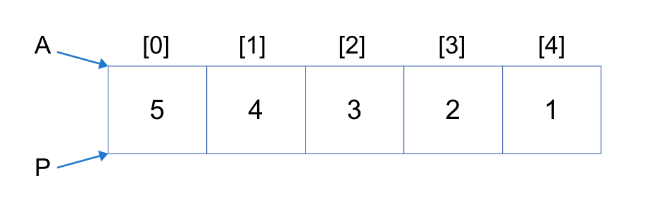
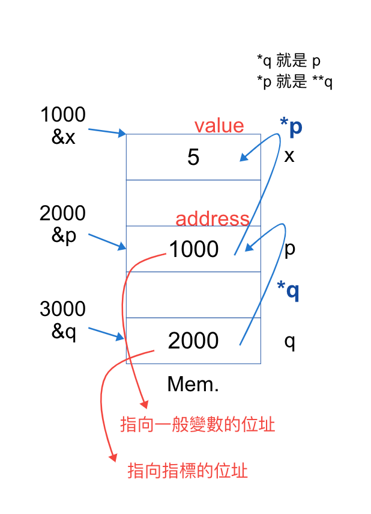

5.2 C 語言重點
C Language
- 結構
- xxx.c
- header: 表頭
- body: object code
- Ex:
# include <stdio.h>=> stdio.h 為 linker, 外部函式庫之 header file
變數 vs 常數
| Variable | Constant |
|---|---|
| 會隨著執行而更動的數值 | 不變 |
| 佔用 memory space 來存取 | 不需 |
| int x; | ex: 'a' or 100 |
- Note: 常數變數 (constant variable)
Define:const int x = 10;
變數宣告
格式： type (space) variable;
ex: int x;
Compare Static typed and Dynamic typed
| Static typed | Dynamic typed |
|---|---|
| 宣告時, 即需決定 data 之型態 | 不需, runtime 才決定 |
| int x; | var x; x = 100; |
| java, C, C++ | javascript, ruby |
常見的 data type 介紹
- boolean (布林):
- 只有兩種狀態:
- true
- false
- Ex:
bool flag;
- character (字元):
- 利用 "ASCII" 來存放
- 佔用 1 byte memory space
- 常見字元編碼
- '0' => (48)10
- 'A' => (65)10
- 'a' => (97)10
- Ex:
char c1; - Note:
| character | string |
|---|---|
| 由一字母或數字組成 | 由 1~多個組成 |
| 用單引號括住 | 用雙引號括住 |
| 'a', 'B'(對), "B"(錯) | "hello"(對), 'hello'(錯) |
- integer (整數):
- 利用 4 bytes 表示
- Ex:
int x; - 除法:
- "/" => 取商,
x = 6/4 - "%" => 取餘,
y = 6%4
- "/" => 取商,
- Ex2:
1
2
3
4
5
6int x;
char a1 = 'a';
x = a1;
a1 = a1 + 3;
printf("%d", x); // x = 97
printf("%c", a1); // a1 = 100
- 浮點數:
| float | double |
|---|---|
| single precision | double precision |
| 32 bits, 佔用 4 bytes | 使用 8 bytes |
| float f; | double d; |
- ex:
float f1 = 3.2/4;=> 0.8float f2 = 5/4;=> 1.0float f3 = 5.0/4;=> 1.25float f4 = (float)5/4;=> 1.25 => 強制將 5 視為浮點數, 強制轉型 casting
- Note:
- 在 c, c++中, 運算是會以最大型別來求得結果
- ex: int(隱含轉型 -> double) * double + float = ? => output double
- 浮點數, 預設為 double 之型態 (因為失真少, 結尾誤差少)
- ex: 3.14 * 2.56 + 3.2 => double
- 在 c, c++中, 運算是會以最大型別來求得結果
NOTE: type range => byte < short < int < long < float < double
變數種類
| local variable | global variable |
|---|---|
| 於 block 或 函式之中宣告 | 於 block 或 函式之外宣告 |
| 僅能在所屬的 block 之內使用 | 全部block都可用 |
| 於 block 一結束, 即清除 | 整個程式結束才清除 |
- static variable
變數的存取順序
1
2
3
4
5
6
7
8全域變數
3.{
2.{
1.{
print(x)
}
}
}
- 先找自身區塊
- 若 1 無, 往外層找
- 若 2 無, 往 global 找
-
Note: dynamic scoping => 依程式執行時的呼叫順序 (runtime) 來決定找尋順序,
main() -> A() -> B()=> 找B找不到, 找A, 在找不到找 main -
Ex1:
1
2
3
4
5
6
7
8
9
10
11
12
13int x = 10; //global
int main()
{
int y = 5;
{
int x = 20;
int z = 8;
printf("%d", x); // x=20, 用完即清除
}
printf("%d", x); // x=10
printf("%d", z); // compile error
return 0;
} -
Ex2:
Ans: (20, 30)1
2
3
4
5
6
7
8
9
10
11
12
13int x = 20;
int main()
{
int y = 10;
fun(y);
return 0;
}
-------------------
void fun(int a)
{
int y = 30;
printf("%d, %d", x, y);
} -
Note: 在 C 語言裡, 只要不是指標, 就是 call by-value
-
local variable => 與 function 一樣, 用 stack 放 => 後進先出
Standard I/O library 標準輸出/輸入函式庫
程式欲使用須引入： #include <stdio.h>
常用函式：
-
printf=> 標準輸出
格式：printf("格式字串", var1, var2...);
Note:- var 可省略
- 若有 var, 需在格式字串中, 有對應的 格式碼
格式碼：
%d 整數
%f 浮點數
%c 字元
%s 字串EX:
1
2
3
4
5printf("hello");
int x;
printf("x is %d", x);
// x is 100 -
scanf=> 標準輸入
從外界 key in 值, 接收到程式
格式：scanf("格式字串", &var1, &var2...); // &位址
Note: 格式碼與printf相同
EX:
1
2int x;
scanf("input: %d", &x);EX:
Sum = 1+2+3+4...+N, N 為輸入值
1
2
3
4
5
6
7
8
9
10
11
12#include <stdio.h>
int main()
{
int N, sum = 0, i;
scanf("input: %d", &N);
for(i = 1; i ≤ N; i++)
{
sum = sum + i;
}
printf("total:%d", sum);
return 0;
}
運算子
| Operator | Priority | Associative |
|---|---|---|
| (), [] | 高 | 右結合 |
| !, ~, -(負), ++, -- | 左結合 | |
| *, /, +, - (算數1) | 左結合 | |
| <<, >> | 左結合 | |
| <, >, ≤, ≥ (關係2) | 左結合 | |
| 位元 (3) | 左結合 | |
| logical (4) | 左結合 | |
| = (assign) | 低 | 右結合 |
- Note:
-
1>2>3>4
-
多個 operator 之運算, 先看 priority, 若相同在看 associate
-
Associative 分為：
- 左結合 ((3+5)+8)
- 右結合 (3+(5+8))
-
operator 分為：
- unary operator (單元)
ex: -5, !flag - binary operator (二元)
ex: 3+5, 6-4, 7*8 - trinary operator (三元)
條件式 ? x : y
1
2
3
4
5
6
7if (條件式)
{
x
} else
{
y
}
- unary operator (單元)
-
=: assign , ==: equals
-
++, --
| 前置式 | 後置式 |
|---|---|
| 先做++, --, 再取值 | 先取值, 再做++, -- |
| ++x, --x | x++, x-- |
-
Ex1:
1
2
3
4
5
6
7int x = 5, y=5;
int A, B;
A = x++;
B = ++y;
print(A, B, x, y);
// 5, 6, 6, 6 -
Ex2:
a = 3, b = 6, 則39/-++a+-20%b--
Sol:
39/(-4)+(-29)%6=-9 + (-5)=-14
位元運算
- 概念：先將資料化成 2 進制, 再開始進行運算
- AND (&)
- OR (|)
- XOR (^)
- <<
- ">>"
- EX1:
int x = 8 & 6;,(0 0 0 0)2 = 0, 同時為 1 才成立, 像 (．) - EX2:
int x = 8 | 6;,(1 1 1 0)2 = 14, 像 (+) - EX3:
int x = 8 ^ 6;,(1 1 1 0 )2 = 14, 相同為 0, 相異為 1 - EX4: << 左移,
x << n=> 將 x 左移 n 個 bits,
作法：在右邊加上 n 個 0 (具備 乘法 效果)
例如：int x = 8 << 2;, (100000)2 = 32 - EX5: >> 右移,
x >> n=> 將 x 右移 n 個 bits,
作法：- step1 => 將右邊砍掉 n 個 bits 維持 sign bit
- step2 => 在左邊補上
- 正 => 0 (n 個)
- 負 => 1 (n 個)
（具備 除法 效果) 例如：int x = 8 >> 2;, (001000)2 = 2
Logical
NOT (!)
- false -> true
- true -> false
1
2bool flag = true;
=> !flag => false
AND (&&) and OR (||)
- 布林運算式最佳化 => 短路現象 => shortcut 捷徑運算
- A, B 均為 conditional (條件式)
if(A && B), A = false, B 不做, 結果必為 false
if(A || B), A = true, B 不做, 結果必為 true
if - else
-
格式一：
1 ? 2 : 31
2
3
4
5if (cond 1) {
true (2)
}else {
false (3)
} -
格式二：
1
2
3
4
5
6
7
8
9
10
11
12
13
14
15
16
17if (cond) {
true 1
}else {
if (cond) {
true 2
}else{
false 3
}
}
------------
if (cond) {
1
}else if (cond) {
2
}else {
3
} -
Note: 當 if ... else 沒有 block 時, 則只會影響到下一個 statement (敘述)
-
ex1:
1
2
3
4
5
6
7
8int x = 1;
if (x < 5) {
x--;
} else {
x++;
}
x++;
printf("%d", x); -
ex2:
1
2
3
4
5
6
7
8
9int x = 10;
/*
說明, 此程式在判別 x 是否大於 5 後, 再行動行
*/
if (x > 5)
x = x + 5;
else
x = x - 5;
printf("%d", x);
Note: 註解可分, // => 單行, /.../ => 多行註解
- ex3:
Q: cond 為：1
2
3
4
5
6
7
8int i = 3, j = 5;
if (cond) {
printf("%d", i);
printf("%d", j);
}else {
printf("false");
printf("%d, %d", i, j);
}- (i = 0) && (j = 4), false, 0, 5 => Ans
- i == 2 && j == 4, false, 3, 5
- (i = 0) & (j = 4), false, 0, 4
- (i = 2) || (j = 4), 2, 5
switch...case
-
思考：
1
2
3
4
5if(c1)
else if (c2)
else if (c3)
else
// 當 else if 太多時，採用 switch...case 較清楚 -
格式：
1
2
3
4
5
6
7
8
9
10
11switch(變數 or 運算式)
{
case 符合文 or 數字：
statement;
case ...:
statement;
case ...:
...;
default: //當所有 case 皆不成立, 則於此
statement;
} -
執行方式：
- step1: 從 switch 的變數去比對哪個 case 符合條件
- step2: 從符合的 case 之 statement 往下做, 直到 break 或 block 結束才停止
-
Ex:
1
2
3
4
5
6
7
8
9
10switch(x) {
default:
printf("No match");
case 1:
printf("1");
case 2:
printf("2");
}
// 1. x = 2 => 印出 2
// 2. x = 5 => 印出 No match 1 2
重複 => loop in C 常用 loop 語法
for
-
格式：
1
2
3
4
5
6
7
8
9
10
11
12
13
14
15
16
17for ( exp1(1); exp2(2); exp3(4))
{
statement(3);
}
// 1. initial: 只做一次，於進入時做
// 2. conditional: 成立，做 3, 接著 4, 再回到 2。不成立，跳出 for loop
----------------------------------
// special case:
for ( ; (true); ;)
[
// 無窮迴圈
]
=>
while (true)
{
...
} -
Ex: 1+2+3....+10, 用 for 寫
1
2
3
4
5
6
7int sum = 0, i;
for(i = 1; i ≤ 10; i++) {
sum = sum + i;
}
printf("sum=%d", sum);
// 55, i = 11 最終跑到 11 不成立
while
- 格式：
1
2
3
4
5
6
7
8
9// 承上題
int sum = 0, i;
i = 1;
while (i ≤ 10)
{
sum = sum + i;
i++;
}
printf("sum=%d", sum);
do...while
- 格式：
1
2
3
4
5do(1)
{
(3)
(4)
}while(2);
Compare 前測式 VS 後測式
| 前測式 | 後測式 |
|---|---|
| 先做測試，成立才做 statement => 最少做 0 次 | 先做，再做測試 => 最少做 1 次 |
| while, for loop | do-while |
- Note: C語言和 C++ 中, 所有關鍵字都是小寫
Compare counted loop VS conditional loop
| counted loop (計數式) | conditional loop(條件式) |
|---|---|
| 執行次數明確 | 執行次數不明確，在一特定的條件，成立或不成立才終止 |
| ex: 1+2+....+100 | linked list 長度 |
| for loop | while loop |
continue & break
| continue | break |
|---|---|
| 遇到時，則之後的敘述不做，直接進入 loop 的下一回合 | 遇到時，直接跳出所屬的 loop |
-
ex:
1
2
3
4
5
6
7
8
9
10
11int sum = 0;
for (int i = 2; i ≤ 10; i+=2)
{
if (i == 6) continue;
sum += i;
}
printf("%d", sum);
// i 2 4 6 8 10 12
//sum 2 6 X 14 24 stop
//sum = 24 -
ex2: 承上題 若 continue 改為 break
1
2
3
4
5
6
7
8
9
10
11int sum = 0;
for (int i = 2; i ≤ 10; i+=2)
{
if (i == 6) break;
sum += i;
}
printf("%d", sum);
// i 2 4 6
//sum 2 6 X
//sum = 6 -
ex3: 呈例 2, 將 == 改為 =
1
2
3
4
5
6
7
8
9int sum = 0;
for (int i = 2; i ≤ 10; i+=2)
{
if (i = 6) break;
sum += i;
}
printf("%d", sum);
//sum = 0
Pointer (指標)
- 說明：
| 一般變數 | 指標變數 |
|---|---|
| int x; | int *p; |
-
Ex:
1
2
3
4
5
6int x = 5;
// 下面兩行為 int *p = &x
int *p;
p = &x;
*p = *p + 1; // 利用指標間接操作指向的內容
printf("%d", x) -
Ex: 一學生採 C language coding 如下：
Q:1
2
3
4
5
6
7
8
9
10
11
12
13
14int main()
{
int a = 10, b = 20;
swap(a, b);
printf("%d, %d", a, b);
return 0;
}
void swap(int x, int y)
{
int temp;
temp = x;
x = y;
y = temp;
}- 為何呼叫 swap 後, a, b 沒變動？
由於此時 swap 的參數傳遞是採用 call by value, 而非 call by address, 故沒有 side effect, 因此 x, y 的變動, a, b 不受影響 - How to modify the program?
in C => 用 pointer 以改成 call by address
in C++ => 用 pointer or 用 call by reference
1
2
3
4
5
6
7
8
9
10
11
12
13
14int main()
{
int a = 10, b = 20;
swap(&a, &b);
printf("%d, %d", a, b);
return 0;
}
void swap(int *x, int *y)
{
int temp;
temp = *x;
*x = *y;
*y = temp;
}
- 為何呼叫 swap 後, a, b 沒變動？
陣列(Array)
-
宣告方式：
type 變數 [size];
int A [5]; -
Note: 在 C, C++ 中, 陣列名稱本身為 一固定(其內容不可更動)指標, 永遠指向第 [0]格
-
Ex:
- A[0] = 10
- A = 1000
- *A = 10
- &A[0] = 1000
- A[2] = 30
- &A[2] = 1008
- *(A+1) = 20 -> A(陣列指標)+1 => 往下一格
- *(A++) = compile error (因為試圖去更動A, 但A的內容不可更動) -> A++ => A=A+1
-
Ex1:
1
2
3
4
5
6
7int A[5];
int *p;
for ( i = 0; ≤ 4; i++)
{
A[i] = 5 - i;
}
p = A; // A為何不用&, 因為A已經是 address 所以不須加
Q:
1. printf(*p); 5
2. printf(p++); 5 // 先取值再往下一格
3. printf(++p); 3
4. printf(++*p); 4
5. printf((p++)); 4
6. printf(--p); 4
- Note:
p++ or ++p => p=p+1 往下一格
p-- or --p => p=p-1 往上一格
(*p)++ or ++*p => *p=*p+1 將p指向的內容+1
(*p)-- or --*p => *p=*p-1 將p指向的內容-1
雙重指標
-
宣告：
type **變數名稱
指標的指標
=> 需 "2次" 的 Mem. access 才可取得data -
Ex:
1
2
3int x = 5;
int *p = &x;
int **q = &p; -
Q:
- q = ? 2000
- &q = ? 3000
- *q = ? 1000
- **q = ? 5
字串的處理方式
- C 語言中無 string 之 data type => 拿 "字元陣列" 來存字串
- ex: cahr a[10];
a = "hello"; - ex1:
char *S = "hello";- Q:
- S[0] = ?
- *(S+4) = ?
- printf("%s", S+2);?
- Sol:
- h
- o
- llo
- Q: